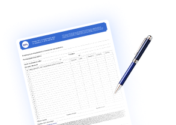

Чтобы мастер починил вашу технику, свяжитесь с нами по указанному номеру или оставьте заявку с помощью онлайн формы на нашем сайте.

Оставьте заявку на ремонт вашего устройства

Фирменные запчасти

Гарантия 12 месяцев

Бесплатный выезд мастера
Стоимость выполнения ремонтных работ представлена без учета цен на комплектующие, которые могут понадобиться в ходе исполнения заказа.
До начала выполнения задачи мы обязательно проинформируем клиента о возможности возникновения дополнительных трат.
В момент вашего обращения в нашу службу поддержки, специалист сообщит предварительную стоимость ремонтных услуг, однако окончательная сумма может быть скорректирована по результатам детальной диагностики устройства.
После анализа состояния аппарата и определения поломок мы предоставляем клиенту актуальные данные о цене необходимых работ.
Стиральная машина значительно облегчает процесс ухода за одеждой и экономит время владельца. Однако, как и всякая сложная техника, она подвержена износу и поломкам. Причинами неисправности становятся неправильная эксплуатация, транспортировка и установка техники, выход из строя внутренних компонентов, механические повреждения. Топ-10 самых распространенных неисправностей стиральных машин, на которые указывают коды ошибок на дисплее:
Современные реалии рынка показывают заметное сокращение срока службы бытовой техники. Если техника прошлых лет могла беспрерывно работать до 10 лет, то сегодня модели среднего сегмента начинают выдавать неисправности уже через 3,5-4 года, а бюджетные варианты нередко выходят из строя уже через год эксплуатации. Если ваша старая машинка сломалась, отремонтируйте ее у профессиональных мастеров нашего сервиса.
Наша главная цель — обеспечить безупречную работу вашего оборудования. Мы не просто выполняем ремонт — мы гарантируем результат, опираясь на опыт и знания наших специалистов.

Мастера нашего сервисного центра специализируются на ремонте стиральных машин всех брендов. Специалисты имеют большой опыт работы с разной бытовой техникой, поэтому быстро и качественно устранят поломки, независимо от модели машины. Мы используем только оригинальные запчасти, что гарантирует долговечность и надежность ремонта. Инженер оперативно отправится на выезд, выполнит диагностику и заменит неисправные детали на новые комплектующие. Мы не экспериментируем, а предлагаем только проверенные решения и выдаем гарантию 12 мес. На все работы.
Наши мастера имеют большой опыт и умеют находить нестандартные решения. Проводим полную диагностику перед началом ремонта, что позволяет точно определить причину неисправности. Инженеры используют современное оборудование и профессиональные инструменты, что позволяет справиться с проблемой в короткое время.
Сервис Социальный ремонт — это честность, точность и уважение к клиенту. Мы работаем ежедневно. Звоните, и мы решим вашу проблему быстро, качественно и по приемлемым ценам, а техника после нашего ремонта прослужит еще долгое время.
Стиральная машина не сливает воду, не отжимает, после слива вода остается в баке. Часто причиной служит засорение фильтра или поломка самого насоса. Для устранения неисправности мастер очистит фильтр или заменит вышедший из строя элемент.
При этом машина не греет воду, белье плохо отстирывается. Первый признак - элемент выходит из строя в результате образования накипи, после механических повреждений, перегрева, скачков напряжения в сети. Мастер заменит неисправный нагревательный элемент на новый.
В процессе эксплуатации стиральной машины щетки изнашиваются, укорачиваются. Машина теряет обороты, и со временем барабан полностью перестает вращаться. Решением служит замена щеток на новые.
Возникает в результате накопления ворса, ниток и мелких предметов из карманов одежды, отложения моющих средств. Приводит к тому, что происходит утечка воды или полная остановка стирки. Рекомендуется регулярно выполнять очистку фильтра от накопившегося мусора.
При поломках управляющего блока машина не откликается, самопроизвольно останавливает программу, не греет воду. Также неполадки требуют профессиональной диагностики, так как модуль управления координирует работу всех узлов машины.
Не нашли свою марку? Не переживайте, наши мастера отлично разбираются в технике любого бренда, регулярно повышают квалификацию и проходят обучение. Это позволяет им быстро и отыскать и устранить даже самые сложные поломки.
По результатам исследований, была выявлена следующая статистика поломок стиральных машин популярных производителей:
Важно отметить, что приведенные данные основаны на анализе независимых источников и носят ориентировочный характер. Реальная картина может отличаться в зависимости от условий эксплуатации и качества обслуживания техники.
Вы можете связаться с нами по номеру телефона +7 (812) 426-93-26 или использовать любой удобный способ обратной связи, представленный на официальном сайте компании.
Наши операторы техподдержки осуществят обратный звонок для выяснения деталей неисправности и согласования времени проведения ремонтных работ в соответствии с Вашим расписанием.
Специалист прибудет по указанному адресу для выполнения всесторонней диагностики. Он предоставит Вам информацию о характере повреждений и предложит точную стоимость исправления неполадок.
Получив Ваше разрешение, мастер начнет процесс восстановления функциональности устройства. По завершении всех необходимых операций он проверит исправность устройства и выдаст гарантийный талон, который будет действовать в течение одного года.


На все выполненные работы и установленные детали мы предоставляем официальную гарантию сроком до года.

Специалист отправляется к клиенту в течение получаса после оформления заявки или к заранее оговоренному времени.

Каждый эксперт нашей команды обладает стажем от пяти лет, регулярно проходит обучение и курсы повышения квалификации.

Вызвать мастера на дом можно ежедневно. Мы принимаем заказы с 7.00 до 00.00.
На все выполненные работы и установленные запасные части мы предоставляем гарантийный документ, сроком до одного года.
Специалист отправляется к клиенту в течение получаса после оформления заявки или к заранее оговоренному времени.
Каждый эксперт нашей команды обладает стажем от пяти лет, регулярно проходит обучение и курсы повышения квалификации.
Вызвать мастера на дом можно ежедневно. Мы принимаем заказы с 7.00 до 00.00.
Мы стремимся предоставлять клиентам услуги исключительного уровня, придерживаясь самых высоких стандартов качества. Безопасность и надежность — ключевые аспекты нашей работы. Мы тщательно подходим к выбору специалистов, допуская к работе с оборудованием только аккредитованных инженеров. Каждый наш мастер имеет множество положительных отзывов от довольных клиентов. Строгий контроль квалификации каждого специалиста гарантирует:


Мастер использует специализированные инструменты и оборудование для быстрого и точного нахождения причины неисправности.
Выполняется подробный анализ обнаруженных проблем, мастер предлагает оптимальные варианты устранения неполадки.
Специалист подбирает и подготавливает все необходимые инструменты.
Выполняется замена изношенных или неисправных деталей, проводится тщательная очистка и обслуживание узлов и механизмов, пайка и ремонт электрических соединений.
Мастер проверяет работоспособность техники после проведенного ремонта.
Инженер отвечает на все возникающие вопросы, дает советы по предотвращению поломок в дальнейшем.

чем сложнее поломка, тем больше времени потребуется мастеру.
оригинальные детали стоят дороже, но гарантируют долговечность.
нестандартные или серьёзные неисправности требуют особых навыков и подходов.
Обратившись к нам, вы сможете оценить полный спектр наших преимуществ:
Высокая квалификация мастеров, что является гарантией выполнения даже самых сложных задач.

Бесплатная комплексная диагностика при заказе ремонта.
Установка оригинальных запчастей от производителей.

Быстрый выезд мастера в день оформления заявки к удобному для вас времени.

Гарантийное обслуживание после проведения ремонтных работ.
Чтобы мастер починил вашу технику, свяжитесь с нами по указанному номеру или оставьте заявку с помощью онлайн формы на нашем сайте.

Обратившись за помощью к квалифицированным специалистам, вы сможете продлить срок службы вашего устройства на многие годы, избежать непредвиденных расходов на дорогостоящий ремонт или замену техники, сохранить уют и комфорт в вашем доме. Регулярное техническое обслуживание и своевременный ремонт помогут предотвратить мелкие неисправности, которые могут перерасти в серьезные поломки.
Наш менеджер перезвонит вам в течение 10 минут и согласует с вами все детали
Ваша заявка принята. Мы свяжемся с вами в ближайшее время.